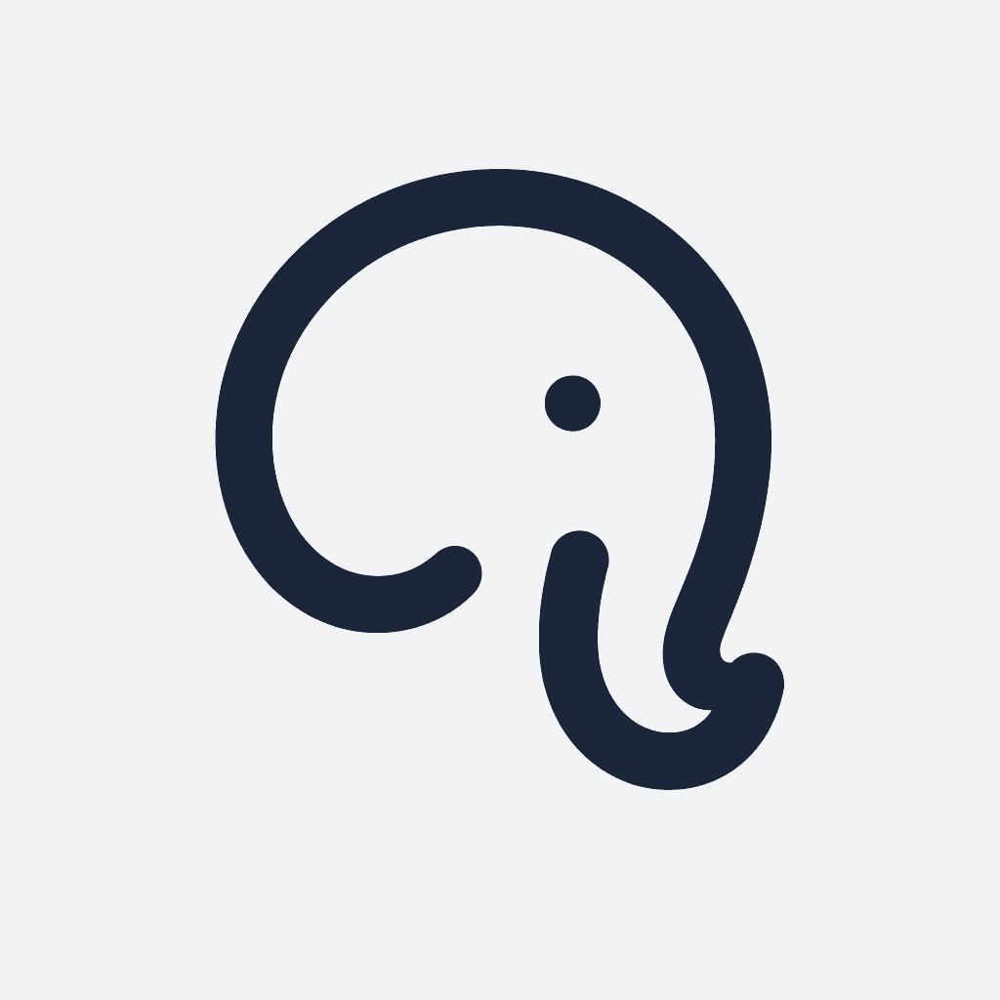
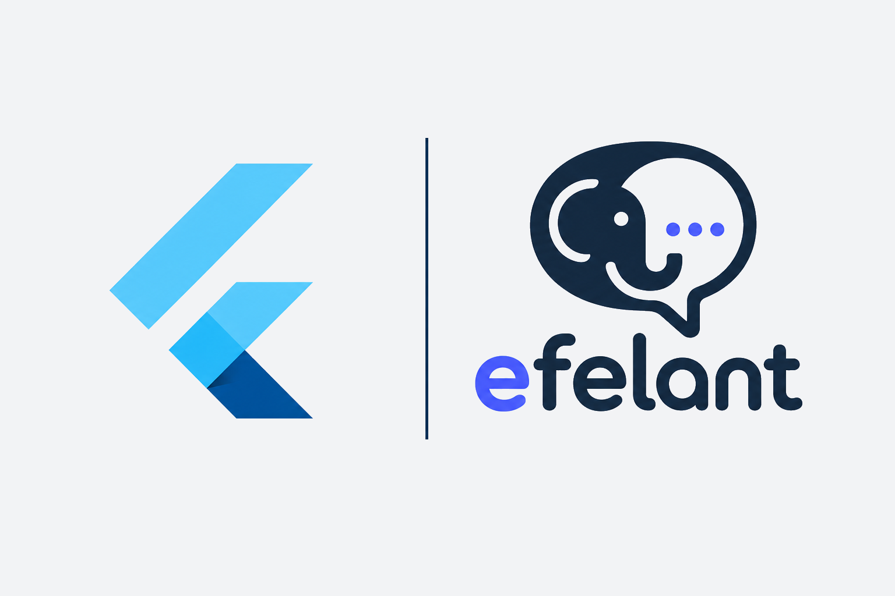
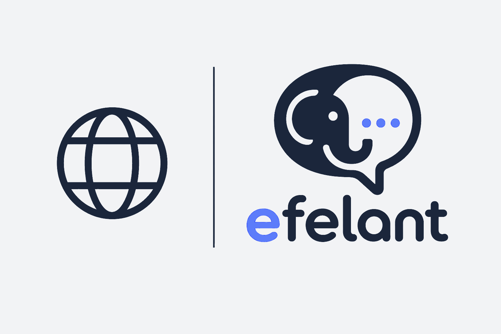
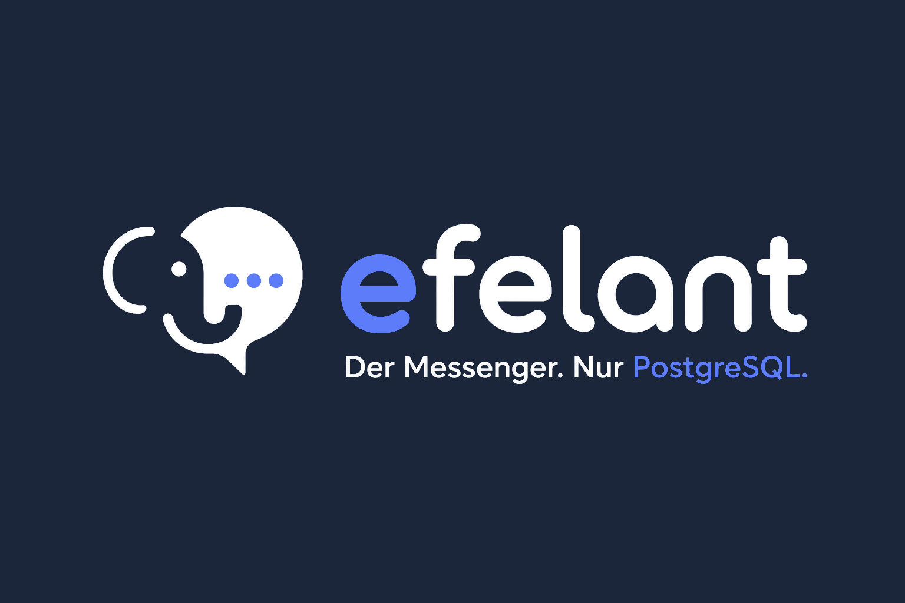

Public preview PostgreSQL is the API →
The communication layer for PostgreSQL applications.
Standalone messenger. Embedded conversation next to a ticket. Activity feed. Status events that commit with your business write. Core is SQL. There is no Node, Nest, or Kafka in the middle.
In-memory SDK, this machine, or your self-hosted gateway. Demo login is alice unless you change it.
Readme
cp .env.example .env
./scripts/up.sh
# open http://localhost:8080SELECT efelant.publish_status(
p_tenant_id => :tenant,
p_context_type => 'access_request',
p_external_id => 'AR-123',
p_status => 'approved'
);curl http://localhost:18080/v1/contexts \
-H "Authorization: Bearer $TOKEN" \
-d '{"tenant_id":"…","type":"ticket","external_id":"T-1"}'Why it looks like this
A strong focus on the database.
PostgreSQL is the API
Clients call stored functions. RLS owns authorization. Sync is conversation_id + last_sequence.


Embed, don’t remodel
Pass tenant_id + type + external_id. Status events can share the host transaction.
One core
Several product shapes.
1
Standalone messenger
The Flutter app. Direct and group chat on the built-in standalone tenant.
2
Embedded conversation
<efelant-conversation> or EfelantConversation on a ticket, claim, or order.
3
Activity feed
Timeline without chat chrome. Status and human messages share one sequence.
4
Transactional status
efelant.publish_status commits with your UPDATE. Rollback hides the event.
5
REST & gRPC
PostgreSQL extensions. Same SQL. No FastAPI sidecar. Tokens scoped per tenant.
6
B2B tenants
Each org is a platform.tenants row. Cross-tenant reads are rejected. The landing demo can switch. Flutter still cannot.

Honest
Local preview is usable. B2B product is not finished.
Tenancy exists in SQL. The landing demo can switch hosts and tenants. The Flutter app still has no tenant switcher, invites, or SSO. E2EE is a first step, not Signal. Read the readiness note before you use it.
Honorable mention

Fireship
I replaced my entire tech stack with Postgres…
The argument we built Efelant on, said out loud. Eleven unorthodox ways to throw the shovel SaaS pile in the incinerator and keep PostgreSQL.